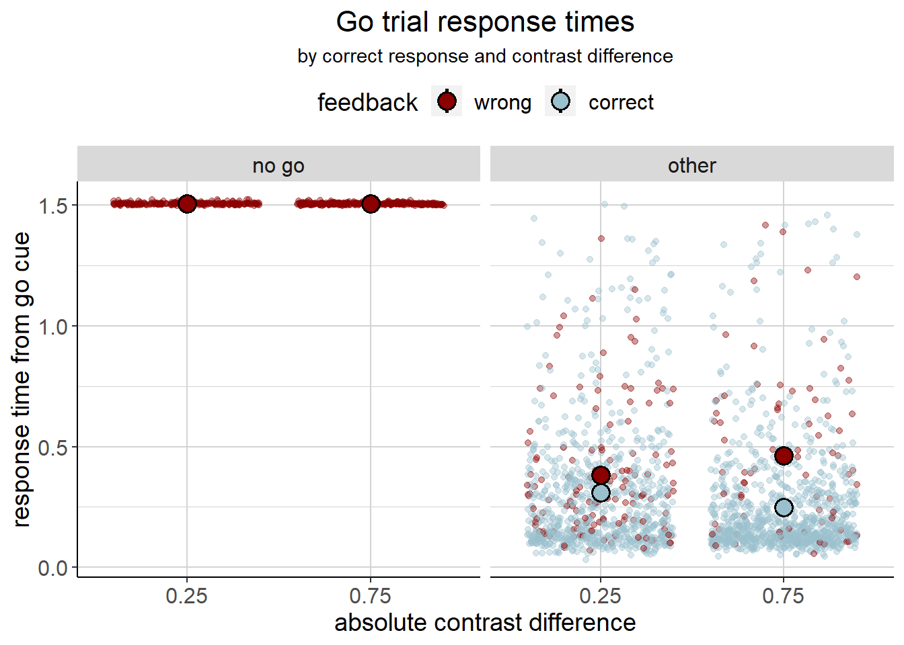
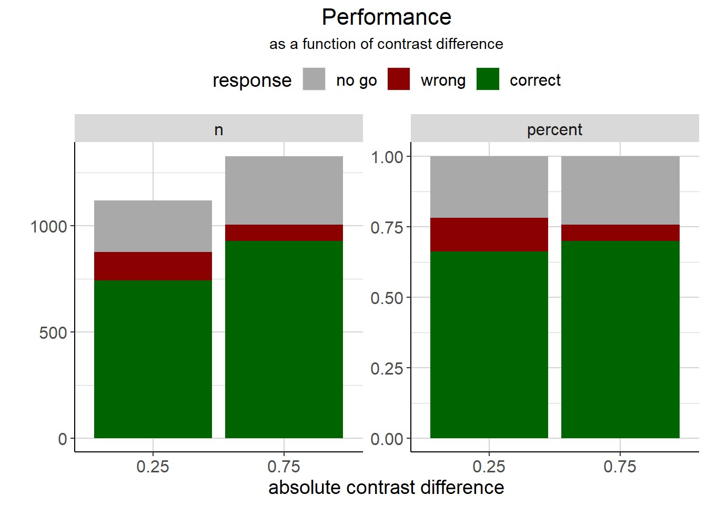

3 Inferential statistics
In our models, we focussed on a contrast difference of .25 vs. .75. This is because the 0 and 1 contrast difference conditions were different from the other contrast levels: At 0 contrast difference, there was no correct answer and feedback was probabilistic, making those trials hard to compare with the others. At a contrast difference of 1, there was only one stimulus presented, potentially changing the (visual) neural response, introducing a bias to our models which are based on spiking data. Hence, consistently with our models, we compared the behavioural data between a contrast difference of .25 vs. .75 only.
3.1 Response times

Obviously, response times are different for no-go responses. Also, a no-go response is always wrong. We hence set up a model for go trials where the mice did not make a no-go response with the following predictors: Contrast level (.25 or .75, coded as -.5 and .5) and feedback (wrong or correct, coded as -.5 and .5). We added a random intercept for each mouse.
| effect | term | estimate | std.error | statistic | df | p.value |
|---|---|---|---|---|---|---|
| fixed | (Intercept) | 0.372 | 0.020 | 18.542 | 10.762 | < .001 |
| fixed | contrast_diff_eff | 0.013 | 0.019 | 0.700 | 1877.869 | .484 |
| fixed | feedback_eff | -0.132 | 0.019 | -7.083 | 1875.357 | < .001 |
| fixed | contrast_diff_eff:feedback_eff | -0.143 | 0.037 | -3.818 | 1875.817 | < .001 |
| ran_pars | sd_mouse | 0.052 | NA | NA | NA | NA |
| ran_pars | sd_Residual | 0.245 | NA | NA | NA | NA |
It seems like overall (i.e. at the mean of correct and wrong responses), there is no effect of contrast difference. There is, however, an effect of feedback: Wrong responses are slower than correct ones (at the mean of a contrast difference .25 and .75). Lastly, there is a strong contrast x feedback interaction: Response times are slower for wrong responses, but only contrast difference of .75.
We run a follow up-model to check for simple effects by changing the coding from -.5 and .5 to 0 and 1. Here, we can confirm that there is a difference between .25 and .75 for wrong responses (which are coded as 0 here). Furthermore, there is an effect of feedback (correct vs. wrong) at a contrast difference of .25 already.
| effect | term | estimate | std.error | statistic | df | p.value |
|---|---|---|---|---|---|---|
| fixed | (Intercept) | 0.396 | 0.028 | 14.351 | 38.318 | < .001 |
| fixed | contrast_diff_eff | 0.084 | 0.035 | 2.385 | 1877.093 | .017 |
| fixed | feedback_eff | -0.061 | 0.023 | -2.653 | 1874.276 | .008 |
| fixed | contrast_diff_eff:feedback_eff | -0.143 | 0.037 | -3.818 | 1875.817 | < .001 |
| ran_pars | sd_mouse | 0.052 | NA | NA | NA | NA |
| ran_pars | sd_Residual | 0.245 | NA | NA | NA | NA |
3.1.1 Relation to the drift diffusion model
The drift diffusion model tells us that the drift rate is higher for the easier trials. At first, this doesn’t seem to fit with the slower reaction times in the easy condition. However, it appears that if the drift rate varies across trials, it is not only possible that reaction times differ, but also that error reaction times are slower than correct reaction times. This is the case when e.g. accuracy is stressed in the task instructions (Ratcliff & McKoon, 2008). In our case, this fits because the mice are really good at the task. They seem to be motivated to get it right, especially in the easier trials (because they know they can do it?). This is in line with the fact that there are less incorrect responses over time (but instead, more no-go responses).
3.2 Performance
Is the proportion of no-go vs. correct vs. incorrect responses different between the contrasts?
| response | 0.25 | 0.75 |
|---|---|---|
| correct | 742 | 930 |
| no go | 244 | 322 |
| wrong | 135 | 76 |
The proportion of correct, no-go and wrong responses seems to be different between a contrast of .25 and .75, \(\chi^2(2) = 31.11\), \(p < .001\). Descriptively, there is overall the same amount of errors for the higher contrast, but those are more likely to be no-go responses than wrong responses.
